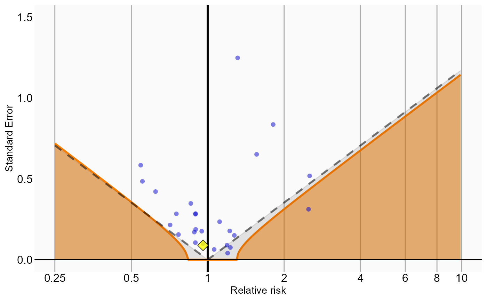
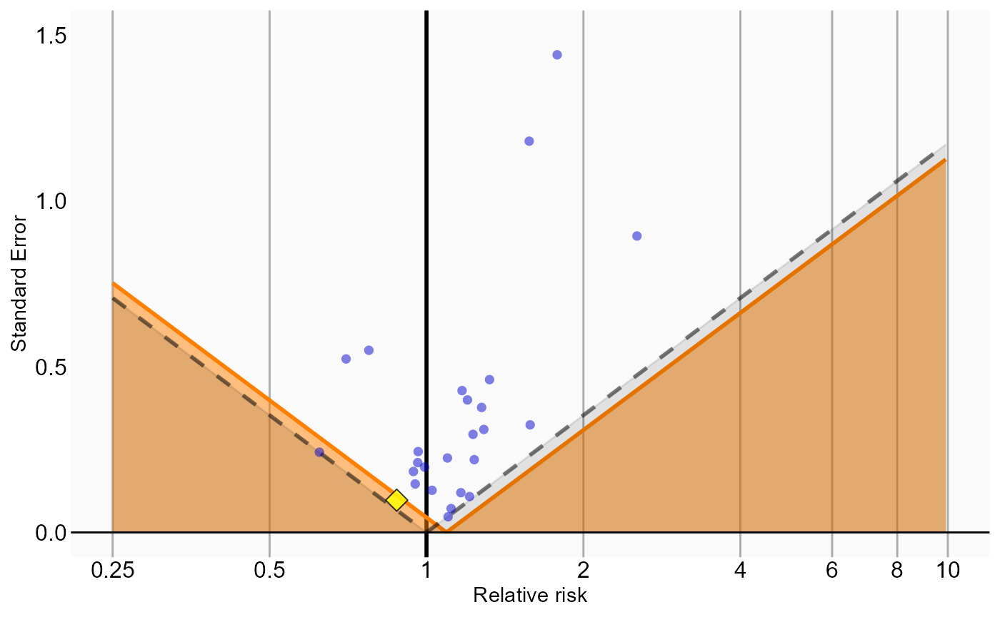

Running multiple analyses at once using the CohortMethod package
Martijn J. Schuemie, Marc A. Suchard and Patrick Ryan
2022-01-21
Source:vignettes/MultipleAnalyses.Rmd
MultipleAnalyses.RmdIntroduction
In this vignette we focus on running several different analyses on several target-comparator-outcome combinations. This can be useful when we want to explore the sensitivity to analyses choices, include controls, or run an experiment similar to the OMOP experiment to empirically identify the optimal analysis choices for a particular research question.
This vignette assumes you are already familiar with the CohortMethod package and are able to perform single studies. We will walk through all the steps needed to perform an exemplar set of analyses, and we have selected the well-studied topic of the effect of coxibs versus non-selective nonsteroidal anti-inflammatory drugs (NSAIDs) on gastrointestinal (GI) bleeding-related hospitalization. For simplicity, we focus on one coxib – celecoxib – and one non-selective NSAID – diclofenac. We will execute various variations of an analysis for the primary outcome and a large set of negative control outcomes.
General approach
The general approach to running a set of analyses is that you specify all the function arguments of the functions you would normally call, and create sets of these function arguments. The final outcome models as well as intermediate data objects will all be saved to disk for later extraction.
An analysis will be executed by calling these functions in sequence:
getDbCohortMethodData()createStudyPopulation()-
createPs()(optional) -
trimByPs()ortrimByPsToEquipoise()(optional) -
matchOnPs(),matchOnPsAndCovariates(),stratifyByPs(), orstratifyByPsAndCovariates()(optional) -
fitOutcomeModel()(optional)
When you provide several analyses to the CohortMethod package, it will determine whether any of the analyses have anything in common, and will take advantage of this fact. For example, if we specify several analyses that only differ in the way the outcome model is fitted, then CohortMethod will extract the data and fit the propensity model only once, and re-use this in all the analyses.
The function arguments you need to define have been divided into four groups:
- Hypothesis of interest: arguments that are specific to a hypothesis of interest, in the case of the cohort method this is a combination of target, comparator, and outcome.
- Analyses: arguments that are not directly specific to a hypothesis of interest, such as the washout window, whether to include drugs as covariates, etc.
- Arguments that are the output of a previous function in the
CohortMethodpackage, such as thecohortMethodDataargument of thecreatePsfunction. These cannot be specified by the user. - Arguments that are specific to an environment, such as the connection details for connecting to the server, and the name of the schema holding the CDM data.
There are a two arguments (excludedCovariateConceptIds, and includedCovariateConceptIds of the getDbCohortMethodData() function) that can be argued to be part both of group 1 and 2. These arguments are therefore present in both groups, and when executing the analysis the union of the two lists of concept IDs will be used.
Preparation for the example
We need to tell R how to connect to the server where the data are. CohortMethod uses the DatabaseConnector package, which provides the createConnectionDetails function. Type ?createConnectionDetails for the specific settings required for the various database management systems (DBMS). For example, one might connect to a PostgreSQL database using this code:
connectionDetails <- createConnectionDetails(dbms = "postgresql",
server = "localhost/ohdsi",
user = "joe",
password = "supersecret")
cdmDatabaseSchema <- "my_cdm_data"
resultsDatabaseSchema <- "my_results"
options(sqlRenderTempEmulationSchema = NULL)
outputFolder <- "./CohortMethodOutput"The last three lines define the cdmDatabaseSchema, resultSchema, and outputFolder variables. We’ll use these later to tell R where the data in CDM format live, where we want to write intermediate tables, and where the intermediate and output files should be stored in the local file system. Note that for Microsoft SQL Server, databaseschemas need to specify both the database and the schema, so for example cdmDatabaseSchema <- "my_cdm_data.dbo".
We also need to prepare our exposures and outcomes of interest. The drug_era table in the OMOP Common Data Model already contains prespecified cohorts of users at the ingredient level, so we will use that for the exposures. For the outcomes, we want to restrict our analysis only to those outcomes that are recorded in an inpatient setting, so we will need to create a custom cohort table. For this example, we want to include GI bleed (concept ID 192671) as well as a set of 35 negative controls. Negative controls are defined as those outcomes where there is no evidence that either the target drug (celexocib) or comparator drug (diclofenac) causes the outcome.
We create a text file called VignetteOutcomes.sql with the following content:
/***********************************
File VignetteOutcomes.sql
***********************************/
IF OBJECT_ID('@resultsDatabaseSchema.outcomes', 'U') IS NOT NULL
DROP TABLE @resultsDatabaseSchema.outcomes;
SELECT ancestor_concept_id AS cohort_definition_id,
condition_start_date AS cohort_start_date,
condition_end_date AS cohort_end_date,
condition_occurrence.person_id AS subject_id
INTO @resultsDatabaseSchema.outcomes
FROM @cdmDatabaseSchema.condition_occurrence
INNER JOIN @cdmDatabaseSchema.visit_occurrence
ON condition_occurrence.visit_occurrence_id = visit_occurrence.visit_occurrence_id
INNER JOIN @cdmDatabaseSchema.concept_ancestor
ON condition_concept_id = descendant_concept_id
WHERE ancestor_concept_id IN (192671, 24609, 29735, 73754, 80004, 134718, 139099,
141932, 192367, 193739, 194997, 197236, 199074, 255573, 257007, 313459, 314658,
316084, 319843, 321596, 374366, 375292, 380094, 433753, 433811, 436665, 436676,
436940, 437784, 438134, 440358, 440374, 443617, 443800, 4084966, 4288310)
AND visit_occurrence.visit_concept_id IN (9201, 9203);This is parameterized SQL which can be used by the SqlRender package. We use parameterized SQL so we do not have to pre-specify the names of the CDM and result schemas. That way, if we want to run the SQL on a different schema, we only need to change the parameter values; we do not have to change the SQL code. By also making use of translation functionality in SqlRender, we can make sure the SQL code can be run in many different environments.
library(SqlRender)
sql <- readSql("VignetteOutcomes.sql")
sql <- render(sql,
cdmDatabaseSchema = cdmDatabaseSchema,
resultsDatabaseSchema = resultsDatabaseSchema)
sql <- translate(sql, targetDialect = connectionDetails$dbms)
connection <- connect(connectionDetails)
executeSql(connection, sql)In this code, we first read the SQL from the file into memory. In the next line, we replace the two parameter names with the actual values. We then translate the SQL into the dialect appropriate for the DBMS we already specified in the connectionDetails. Next, we connect to the server, and submit the rendered and translated SQL.
Specifying hypotheses of interest
The first group of arguments define the target, comparator, and outcome. Here we demonstrate how to create one set, and add that set to a list:
tcos <- createTargetComparatorOutcomes(targetId = 1118084,
comparatorId = 1124300,
outcomeIds = c(192671, 29735, 140673, 197494,
198185, 198199, 200528, 257315,
314658, 317376, 321319, 380731,
432661, 432867, 433516, 433701,
433753, 435140, 435459, 435524,
435783, 436665, 436676, 442619,
444252, 444429, 4131756, 4134120,
4134454, 4152280, 4165112, 4174262,
4182210, 4270490, 4286201, 4289933))
targetComparatorOutcomesList <- list(tcos)We defined the target to be celecoxib (concept ID 1118084), the comparator to be diclofenac (concept ID 1124300), and the outcomes of interest are GI-bleed (concept ID 192671) and a large number of negative control outcomes.
A convenient way to save targetComparatorOutcomesList to file is by using the saveTargetComparatorOutcomesList function, and we can load it again using the loadTargetComparatorOutcomesList function.
Specifying analyses
The second group of arguments are not specific to a hypothesis of interest, and comprise the majority of arguments. For each function that will be called during the execution of the analyses, a companion function is available that has (almost) the same arguments. For example, for the trimByPs() function there is the createTrimByPsArgs() function. These companion functions can be used to create the arguments to be used during execution:
nsaids <- 21603933
covarSettings <- createDefaultCovariateSettings(excludedCovariateConceptIds = nsaids,
addDescendantsToExclude = TRUE)
getDbCmDataArgs <- createGetDbCohortMethodDataArgs(washoutPeriod = 183,
restrictToCommonPeriod = FALSE,
firstExposureOnly = TRUE,
removeDuplicateSubjects = "remove all",
studyStartDate = "",
studyEndDate = "",
excludeDrugsFromCovariates = FALSE,
covariateSettings = covarSettings)
createStudyPopArgs <- createCreateStudyPopulationArgs(removeSubjectsWithPriorOutcome = TRUE,
minDaysAtRisk = 1,
riskWindowStart = 0,
startAnchor = "cohort start",
riskWindowEnd = 30,
endAnchor = "cohort end")
fitOutcomeModelArgs1 <- createFitOutcomeModelArgs(modelType = "cox")Any argument that is not explicitly specified by the user will assume the default value specified in the function. We can now combine the arguments for the various functions into a single analysis:
cmAnalysis1 <- createCmAnalysis(analysisId = 1,
description = "No matching, simple outcome model",
getDbCohortMethodDataArgs = getDbCmDataArgs,
createStudyPopArgs = createStudyPopArgs,
fitOutcomeModel = TRUE,
fitOutcomeModelArgs = fitOutcomeModelArgs1)Note that we have assigned an analysis ID (1) to this set of arguments. We can use this later to link the results back to this specific set of choices. We also include a short description of the analysis.
We can easily create more analyses, for example by using matching, stratification, inverse probability of treatment weighting, or by using more sophisticated outcome models:
createPsArgs <- createCreatePsArgs() # Use default settings only
matchOnPsArgs <- createMatchOnPsArgs(maxRatio = 100)
fitOutcomeModelArgs2 <- createFitOutcomeModelArgs(modelType = "cox",
stratified = TRUE)
cmAnalysis2 <- createCmAnalysis(analysisId = 2,
description = "Matching",
getDbCohortMethodDataArgs = getDbCmDataArgs,
createStudyPopArgs = createStudyPopArgs,
createPs = TRUE,
createPsArgs = createPsArgs,
matchOnPs = TRUE,
matchOnPsArgs = matchOnPsArgs,
fitOutcomeModel = TRUE,
fitOutcomeModelArgs = fitOutcomeModelArgs1)
stratifyByPsArgs <- createStratifyByPsArgs(numberOfStrata = 5)
cmAnalysis3 <- createCmAnalysis(analysisId = 3,
description = "Stratification",
getDbCohortMethodDataArgs = getDbCmDataArgs,
createStudyPopArgs = createStudyPopArgs,
createPs = TRUE,
createPsArgs = createPsArgs,
stratifyByPs = TRUE,
stratifyByPsArgs = stratifyByPsArgs,
fitOutcomeModel = TRUE,
fitOutcomeModelArgs = fitOutcomeModelArgs2)
fitOutcomeModelArgs3 <- createFitOutcomeModelArgs(modelType = "cox",
inversePtWeighting = TRUE)
cmAnalysis4 <- createCmAnalysis(analysisId = 4,
description = "Inverse probability weighting",
getDbCohortMethodDataArgs = getDbCmDataArgs,
createStudyPopArgs = createStudyPopArgs,
createPs = TRUE,
createPsArgs = createPsArgs,
fitOutcomeModel = TRUE,
fitOutcomeModelArgs = fitOutcomeModelArgs3)
fitOutcomeModelArgs4 <- createFitOutcomeModelArgs(useCovariates = TRUE,
modelType = "cox",
stratified = TRUE)
cmAnalysis5 <- createCmAnalysis(analysisId = 5,
description = "Matching plus full outcome model",
getDbCohortMethodDataArgs = getDbCmDataArgs,
createStudyPopArgs = createStudyPopArgs,
createPs = TRUE,
createPsArgs = createPsArgs,
matchOnPs = TRUE,
matchOnPsArgs = matchOnPsArgs,
fitOutcomeModel = TRUE,
fitOutcomeModelArgs = fitOutcomeModelArgs4)
interactionCovariateIds <- c(8532001, 201826210, 21600960413) # Female, T2DM, concurent use of antithrombotic agents
fitOutcomeModelArgs5 <- createFitOutcomeModelArgs(modelType = "cox",
stratified = TRUE,
interactionCovariateIds = interactionCovariateIds)
cmAnalysis6 <- createCmAnalysis(analysisId = 6,
description = "Stratification plus interaction terms",
getDbCohortMethodDataArgs = getDbCmDataArgs,
createStudyPopArgs = createStudyPopArgs,
createPs = TRUE,
createPsArgs = createPsArgs,
stratifyByPs = TRUE,
stratifyByPsArgs = stratifyByPsArgs,
fitOutcomeModel = TRUE,
fitOutcomeModelArgs = fitOutcomeModelArgs5)These analyses can be combined in a list:
cmAnalysisList <- list(cmAnalysis1,
cmAnalysis2,
cmAnalysis3,
cmAnalysis4,
cmAnalysis5,
cmAnalysis6)A convenient way to save cmAnalysisList to file is by using the saveCmAnalysisList function, and we can load it again using the loadCmAnalysisList function.
Target and comparator selection strategies
Often a new-user cohort design is used for comparative effectiveness studies, where the selection of the comparator is part of the hypothesis of interest: ‘Does use of drug A lead to an increased risk compared to use of drug B?’, where B is the comparator. But sometimes, the design is used for safety assessment: ‘Does use of drug A lead to an increased risk?’ In this case the comparator is a proxy for the counterfactual of no treatment. For example, we could pick the comparator to be a drug known not to cause the outcome. we can argue that the selection of the comparator then becomes part of the analyses specification, not the hypothesis of interest, and we can have different strategies for selecting a comparator: Do we for instance pick a drug in the same class, or a drug with the same indication?
In the situation where the comparator choice becomes part of the analyses, we can specify multiple comparators per hypothesis of interest by using a list:
comparatorIds = list(drugInSameClass = 1124300,
drugWithSameIndication = 1125315)
tcos <- createTargetComparatorOutcomes(targetId = 1118084,
comparatorId = comparatorIds,
outcomeIds = 192671)
targetComparatorOutcomesList2 <- list(tcos)When we specify an analysis, we can then refer to one comparator or another:
cmAnalysis1 <- createCmAnalysis(analysisId = 1,
description = "Analysis using drug in same class",
comparatorType = "drugInSameClass",
getDbCohortMethodDataArgs = getDbCmDataArgs,
createStudyPopArgs = createStudyPopArgs,
createPs = TRUE,
createPsArgs = createPsArgs,
matchOnPs = TRUE,
matchOnPsArgs = matchOnPsArgs,
fitOutcomeModel = TRUE,
fitOutcomeModelArgs = fitOutcomeModelArgs1)
cmAnalysis2 <- createCmAnalysis(analysisId = 2,
description = "Analysis using drug with same indication",
comparatorType = "drugWithSameIndication",
getDbCohortMethodDataArgs = getDbCmDataArgs,
createStudyPopArgs = createStudyPopArgs,
createPs = TRUE,
createPsArgs = createPsArgs,
matchOnPs = TRUE,
matchOnPsArgs = matchOnPsArgs,
fitOutcomeModel = TRUE,
fitOutcomeModelArgs = fitOutcomeModelArgs1)
cmAnalysisList2 <- list(cmAnalysis1, cmAnalysis2)In this example, the first analysis (analysisID = 1) will use concept 1124300 as comparator, whilst the second analysis analysis (analysisID = 2) will use concept 1125315 as comparator.
The same mechanism can be used to specify types for the targetId.
Executing multiple analyses
We can now run the analyses against the hypotheses of interest using the runCmAnalyses() function. This function will run all specified analyses against all hypotheses of interest, meaning that the total number of outcome models is length(cmAnalysisList) * length(targetComparatorOutcomesList) (if all analyses specify an outcome model should be fitted).
result <- runCmAnalyses(connectionDetails = connectionDetails,
cdmDatabaseSchema = cdmDatabaseSchema,
exposureDatabaseSchema = cdmDatabaseSchema,
exposureTable = "drug_era",
outcomeDatabaseSchema = resultsDatabaseSchema,
outcomeTable = "outcomes",
cdmVersion = cdmVersion,
outputFolder = outputFolder,
cmAnalysisList = cmAnalysisList,
targetComparatorOutcomesList = targetComparatorOutcomesList,
getDbCohortMethodDataThreads = 1,
createPsThreads = 1,
psCvThreads = 10,
createStudyPopThreads = 4,
trimMatchStratifyThreads = 10,
fitOutcomeModelThreads = 4,
outcomeCvThreads = 10)In the code above, we provide the arguments for connecting to the database, which schemas and tables to use, as well as the analyses and hypotheses of interest. The outputFolder specifies where the outcome models and intermediate files will be written. We also instruct CohortMethod to use multiple threads for various stages in the analyses, meaning these will be executed in parallel on multiple CPUs in the computer. Multithreading can significantly reduce execution time, but will require more system resources such as memory and temporary disk space.
Restarting
If for some reason the execution was interrupted, you can restart by re-issuing the runCmAnalyses() command. Any intermediate and final products that have already been completed and written to disk will be skipped.
Retrieving the results
The result of the runCmAnalyses() is a data frame with one row per target-target-outcome-analysis combination. It provides the file names of the intermediate and end-result files that were constructed. For example, we can retrieve and plot the propensity scores for the combination of our target, comparator, outcome of interest, and last analysis:
psFile <- result$psFile[result$targetId == 1118084 &
result$comparatorId == 1124300 &
result$outcomeId == 192671 &
result$analysisId == 5]
ps <- readRDS(file.path(outputFolder, psFile))
plotPs(ps)
Note that some of the file names will appear several times in the table. For example, analysis 3 and 5 only differ in terms of the outcome model, and will share the same propensity score and stratification files.
We can create a summary of the results using summarizeAnalyses():
analysisSum <- summarizeAnalyses(result, outputFolder)
head(analysisSum)## # A tibble: 6 x 32
## analysisId targetId comparatorId outcomeId rr ci95lb ci95ub p target
## <dbl> <dbl> <dbl> <dbl> <dbl> <dbl> <dbl> <dbl> <int>
## 1 1 1118084 1124300 24609 1.25 0.921 1.70 1.56e- 1 67936
## 2 1 1118084 1124300 29735 1.39 0.995 1.97 5.62e- 2 68129
## 3 1 1118084 1124300 73754 1.24 0.901 1.70 1.92e- 1 68127
## 4 1 1118084 1124300 80004 0.596 0.531 0.668 9.55e-19 63567
## 5 1 1118084 1124300 134718 4.37 0.672 85.2 2.33e- 1 68626
## 6 1 1118084 1124300 139099 1.23 0.662 2.33 5.19e- 1 68452
## # ... with 23 more variables: comparator <int>, targetDays <dbl>,
## # comparatorDays <dbl>, eventsTarget <dbl>, eventsComparator <dbl>,
## # logRr <dbl>, seLogRr <dbl>, llr <dbl>, rrI201826210 <dbl>,
## # ci95lbI201826210 <dbl>, ci95ubI201826210 <dbl>, logRrI201826210 <dbl>,
## # seLogRrI201826210 <dbl>, rrI8532001 <dbl>, ci95lbI8532001 <dbl>,
## # ci95ubI8532001 <dbl>, logRrI8532001 <dbl>, seLogRrI8532001 <dbl>,
## # rrI21600960413 <dbl>, ci95lbI21600960413 <dbl>, ...This tells us, per target-comparator-outcome-analysis combination, the estimated relative risk and 95% confidence interval, as well as the number of people in the treated and comparator group (after trimming and matching if applicable), and the number of outcomes observed for those groups within the specified risk windows.
Empirical calibration
Now that we have produced estimates for all outcomes including our negative controls, we can perform empirical calibration to estimate the bias of the various analyses included in our study. We will create the calibration effect plots for every analysis ID. In each plot, the blue dots represent our negative control outcomes, and the yellow diamond represents our health outcome of interest: GI bleed. An unbiased, well-calibrated analysis should have 95% of the negative controls between the dashed lines (ie. 95% should have p > .05).
install.packages("EmpiricalCalibration")
library(EmpiricalCalibration)
# Analysis 1: No matching, simple outcome model
negCons <- analysisSum[analysisSum$analysisId == 1 & analysisSum$outcomeId != 192671, ]
hoi <- analysisSum[analysisSum$analysisId == 1 & analysisSum$outcomeId == 192671, ]
null <- fitNull(negCons$logRr, negCons$seLogRr)
plotCalibrationEffect(negCons$logRr, negCons$seLogRr, hoi$logRr, hoi$seLogRr, null)
# Analysis 2: Matching
negCons <- analysisSum[analysisSum$analysisId == 2 & analysisSum$outcomeId != 192671, ]
hoi <- analysisSum[analysisSum$analysisId == 2 & analysisSum$outcomeId == 192671, ]
null <- fitNull(negCons$logRr, negCons$seLogRr)
plotCalibrationEffect(negCons$logRr, negCons$seLogRr, hoi$logRr, hoi$seLogRr, null)
# Analysis 3: Stratification
negCons <- analysisSum[analysisSum$analysisId == 3 & analysisSum$outcomeId != 192671, ]
hoi <- analysisSum[analysisSum$analysisId == 3 & analysisSum$outcomeId == 192671, ]
null <- fitNull(negCons$logRr, negCons$seLogRr)
plotCalibrationEffect(negCons$logRr, negCons$seLogRr, hoi$logRr, hoi$seLogRr, null)
# Analysis 4: Inverse probability of treatment weighting
negCons <- analysisSum[analysisSum$analysisId == 4 & analysisSum$outcomeId != 192671, ]
hoi <- analysisSum[analysisSum$analysisId == 4 & analysisSum$outcomeId == 192671, ]
null <- fitNull(negCons$logRr, negCons$seLogRr)
plotCalibrationEffect(negCons$logRr, negCons$seLogRr, hoi$logRr, hoi$seLogRr, null)
# Analysis 5: Stratification plus full outcome model
negCons <- analysisSum[analysisSum$analysisId == 5 & analysisSum$outcomeId != 192671, ]
hoi <- analysisSum[analysisSum$analysisId == 5 & analysisSum$outcomeId == 192671, ]
null <- fitNull(negCons$logRr, negCons$seLogRr)
plotCalibrationEffect(negCons$logRr, negCons$seLogRr, hoi$logRr, hoi$seLogRr, null)
Analysis 6 explored interactions with certain variables. The estimates for these interaction terms are also stored in the analysis summary. We can examine whether these estimates are also consistent with the null. In this example we consider the interaction with ‘gender = female’ (covariate ID 8532001):
# Analysis 6: Stratification plus interaction terms
negCons <- analysisSum[analysisSum$analysisId == 6 & analysisSum$outcomeId != 192671, ]
hoi <- analysisSum[analysisSum$analysisId == 6 & analysisSum$outcomeId == 192671, ]
null <- fitNull(negCons$logRrI8532001, negCons$seLogRrI8532001)
plotCalibrationEffect(logRrNegatives = negCons$logRrI8532001,
seLogRrNegatives = negCons$seLogRrI8532001,
logRrPositives = hoi$logRrI8532001,
seLogRrPositives = hoi$seLogRrI8532001, null)## Warning in fitNull(negCons$logRrI8532001, negCons$seLogRrI8532001): Estimate(s)
## with NA standard error detected. Removing before fitting null distribution## Warning: Removed 9 rows containing missing values (geom_point).
Acknowledgments
Considerable work has been dedicated to provide the CohortMethod package.
citation("CohortMethod")##
## To cite package 'CohortMethod' in publications use:
##
## Martijn Schuemie, Marc Suchard and Patrick Ryan (2022). CohortMethod:
## New-User Cohort Method with Large Scale Propensity and Outcome
## Models. https://ohdsi.github.io/CohortMethod,
## https://github.com/OHDSI/CohortMethod.
##
## A BibTeX entry for LaTeX users is
##
## @Manual{,
## title = {CohortMethod: New-User Cohort Method with Large Scale Propensity and Outcome Models},
## author = {Martijn Schuemie and Marc Suchard and Patrick Ryan},
## year = {2022},
## note = {https://ohdsi.github.io/CohortMethod, https://github.com/OHDSI/CohortMethod},
## }Further, CohortMethod makes extensive use of the Cyclops package.
citation("Cyclops")##
## To cite Cyclops in publications use:
##
## Suchard MA, Simpson SE, Zorych I, Ryan P, Madigan D (2013). "Massive
## parallelization of serial inference algorithms for complex generalized
## linear models." _ACM Transactions on Modeling and Computer Simulation_,
## *23*, 10. <URL: https://dl.acm.org/doi/10.1145/2414416.2414791>.
##
## A BibTeX entry for LaTeX users is
##
## @Article{,
## author = {M. A. Suchard and S. E. Simpson and I. Zorych and P. Ryan and D. Madigan},
## title = {Massive parallelization of serial inference algorithms for complex generalized linear models},
## journal = {ACM Transactions on Modeling and Computer Simulation},
## volume = {23},
## pages = {10},
## year = {2013},
## url = {https://dl.acm.org/doi/10.1145/2414416.2414791},
## }This work is supported in part through the National Science Foundation grant IIS 1251151.